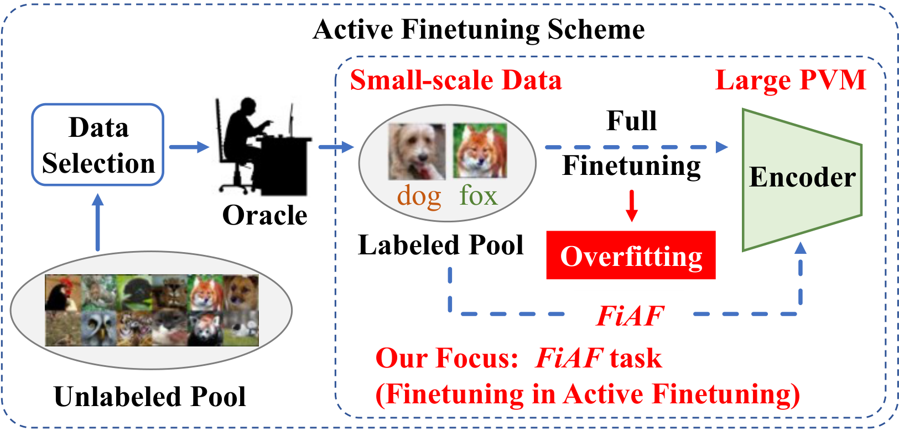
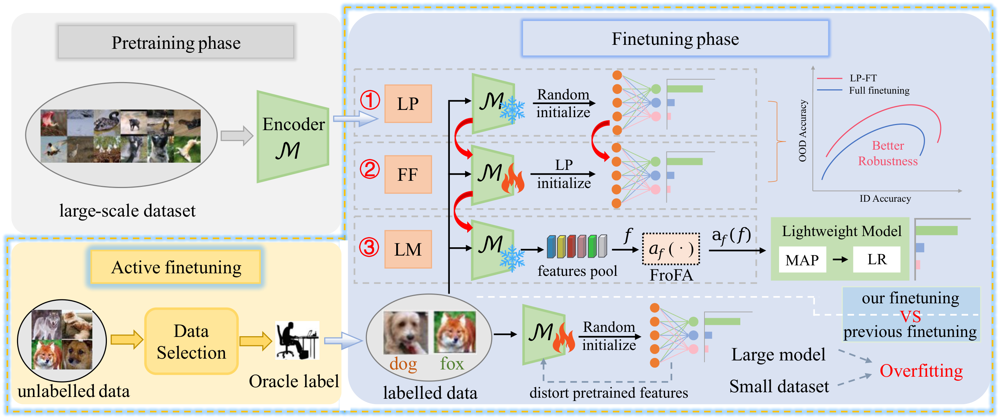

Abstract
The main goal of active finetuning is to improve a pretrained model's performance on a specific task or domain by finetuning it with carefully selected informative or challenging data. Previous research has predominantly focused on the active aspect (i.e., data selection) while uniformly employing full finetuning for model adaptation, which inevitably distorts pretrained features due to distribution shift. This issue becomes particularly pronounced when the model size is large relative to the finetuning data quantity, leading to heightened overfitting risks.
To address this critical gap, we formally outline the FiAF (Finetuning in Active Finetuning) task that emphasizes systematic exploration of finetuning methodologies in active learning. We propose FACT (Finetuning in ACTive finetuning), a three-phase hierarchical finetuning framework featuring both efficiency and simplicity, specifically designed for active finetuning scenarios.
Our comprehensive experiments span: (1) three major dataset categories encompassing classic (CIFAR10, CIFAR100, ImageNet-1k), imbalanced (CIFAR10-LT, CIFAR100-LT), and fine-grained (StanfordCars, FGVCAircraft) image classification datasets; (2) diverse pretrained architectures including ConvNeXt, ViT, and Vision LSTM (ViL) networks; (3) a systematic investigation of frozen feature augmentation (FroFA) strategies. Notably, under low sampling ratios, our framework achieves remarkable performance gains of over 20% on the ViT model for CIFAR10, CIFAR100, and ImageNet-1k benchmarks.
Motivation: The FiAF Task

Figure 1. We focus on the Finetuning task in Active Finetuning (FiAF). Prior studies have emphasized the active (i.e., data selection) over the finetuning. However, the full finetuning in FiAF faces overfitting challenges due to small-scale data and large pretrained vision model (PVM). The compatibility of finetuning methods in the active finetuning scheme has often been overlooked in previous research.
The FACT Framework

Figure 2. The proposed FACT framework for the FiAF task involves a three-phase process: (1) Linear Probing (LP): Freeze the pretrained backbone and finetune only the linear classifier. (2) Full Finetuning (FF): Jointly finetune all parameters using the LP-initialized head. (3) Lightweight Model (LM): Extract features via the FF model, augment with FroFA, and train a lightweight attention-pooling + logistic regression classifier.
Linear Probing (LP)
Freeze the pretrained backbone. Only the randomly-initialized linear classifier is finetuned. This establishes an unbiased initial feature alignment.
Full Finetuning (FF)
The LP-warm-started head and the full backbone are finetuned jointly. This avoids the feature distortion caused by a randomly-initialized classifier.
Lightweight Model (LM)
Extract features from the FF model, apply Frozen Feature Augmentation (FroFA), and train a multi-head attention pooling + logistic regression head to mitigate overfitting.
Contributions
-
We formally outline the FiAF task, recognizing that finetuning in active finetuning differs from traditional finetuning due to distribution shift and limited labeled data, and identify the critical problems that arise from this discrepancy.
-
We propose FACT, a three-phase hierarchical finetuning framework that addresses the issues with existing finetuning methods through LP→FF followed by frozen feature augmentation and well-regularized lightweight models — a more optimal approach for the FiAF task.
-
We expand the evaluation of various backbone networks for active finetuning, and find that the Vision LSTM (ViL) architecture demonstrates strong performance in this context.
-
We conduct comprehensive experiments on classic, long-tail, and fine-grained classification datasets. Our approach achieves state-of-the-art performance while demonstrating higher training efficiency, particularly under low annotation budgets.
Experimental Results
Comprehensive evaluation of FACT: backbone comparisons (Fig. 3), accuracy on classic / long-tail / fine-grained benchmarks (Tab. 1–3), training efficiency (Tab. 4), generalization (Tab. 5), and ablation study (Tab. 6)
BibTeX
@misc{xu2026fact_TIP,
title = {FACT: A Simple and Efficient Framework for Active Finetuning},
author = {Wenshuai Xu and You Song and Yuzhuo Cui and Minjie Ren and Qingjie Liu and Zhenghui Hu},
year = {2026},
eprint = {2606.02079},
archivePrefix = {arXiv},
primaryClass = {cs.CV},
url = {https://arxiv.org/abs/2606.02079},
}